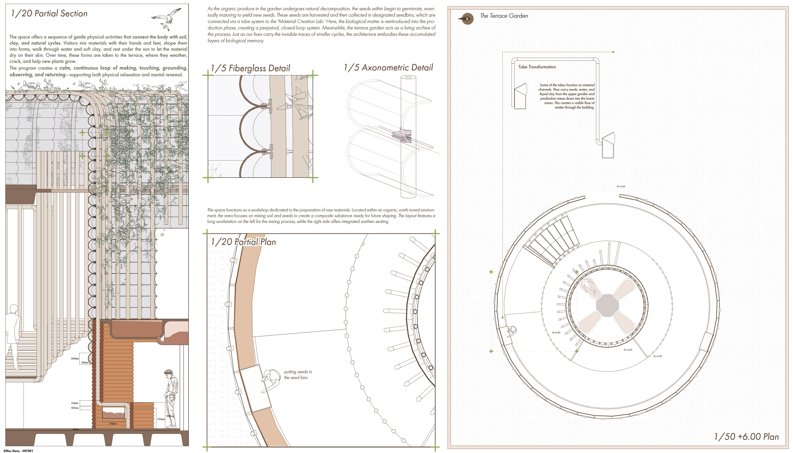
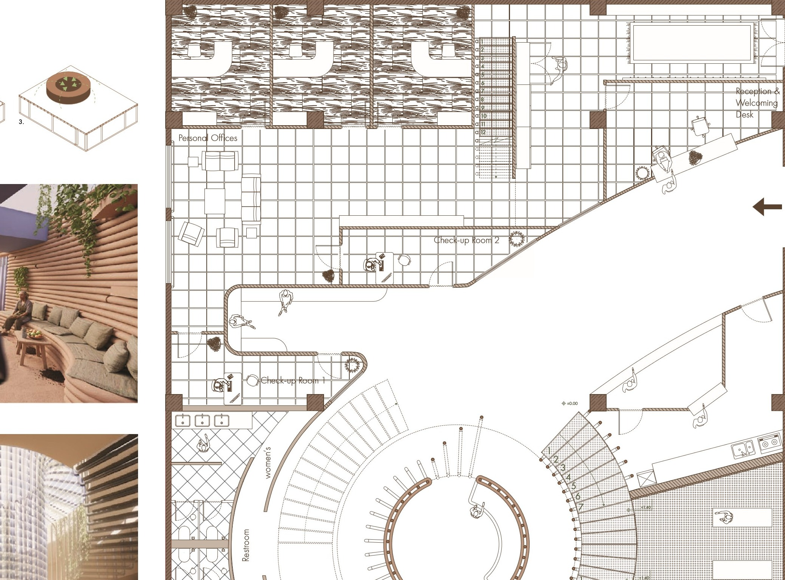
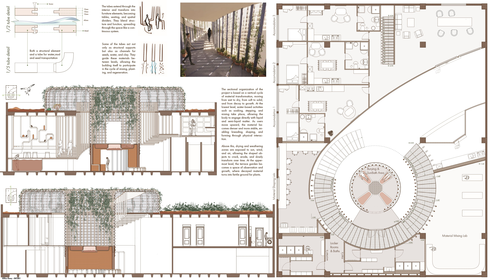
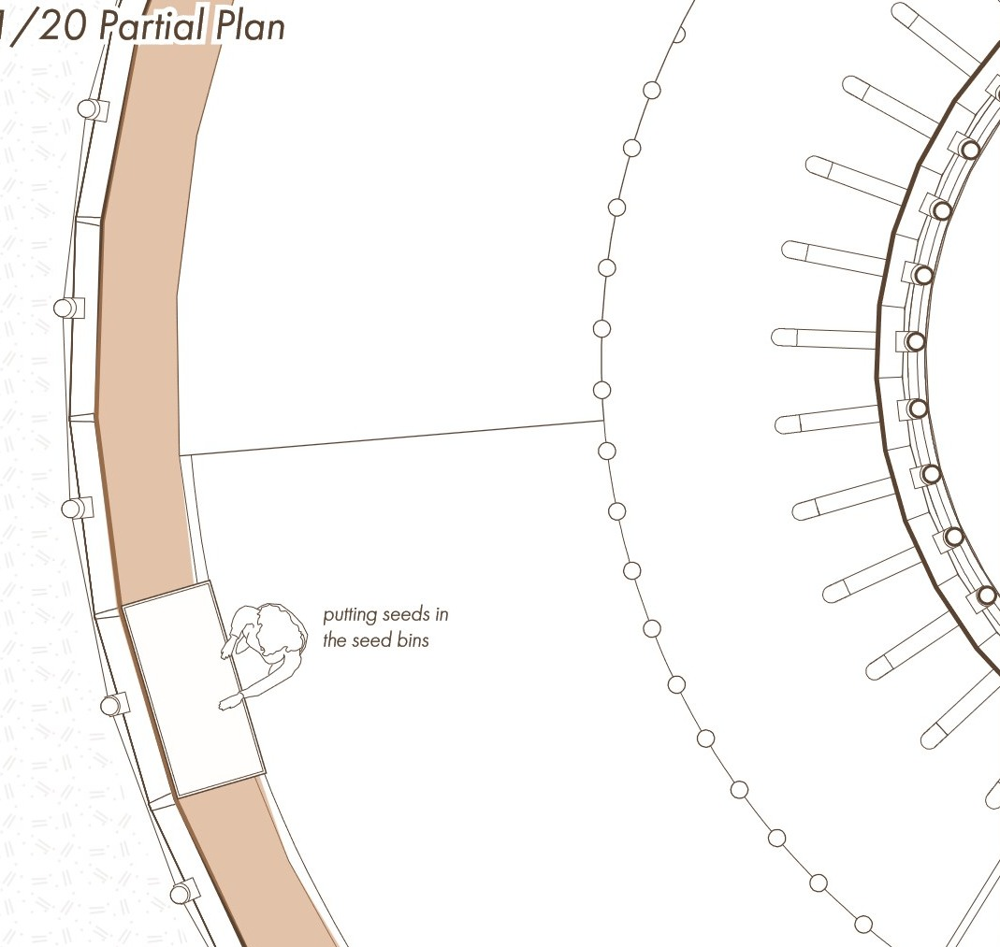
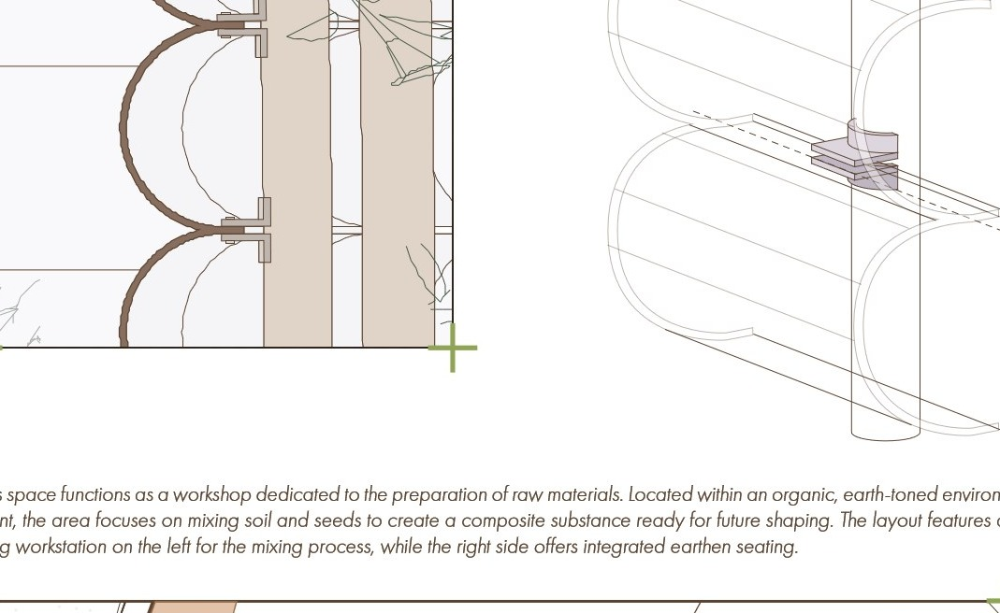
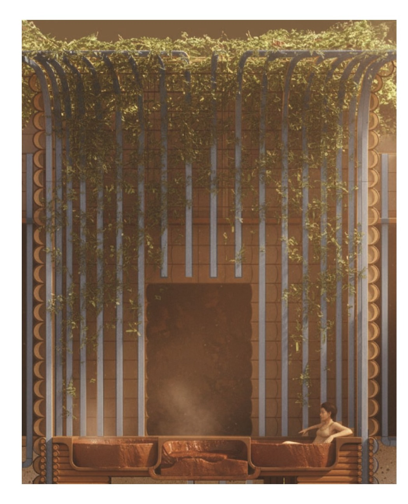
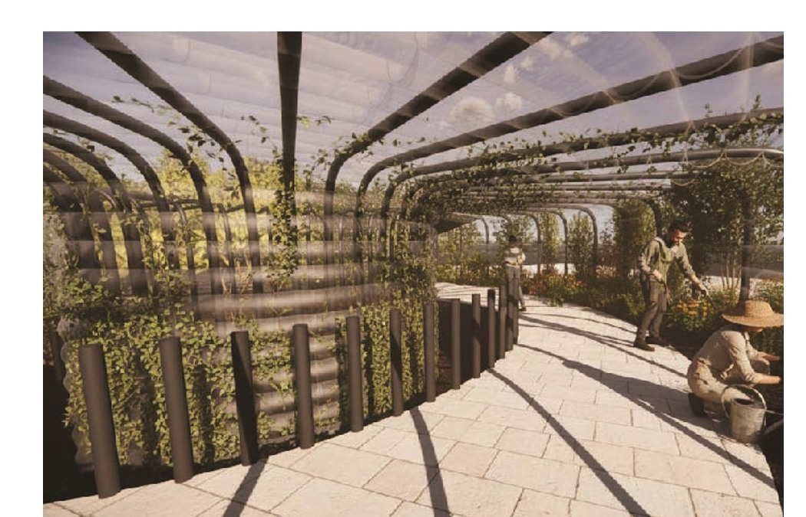
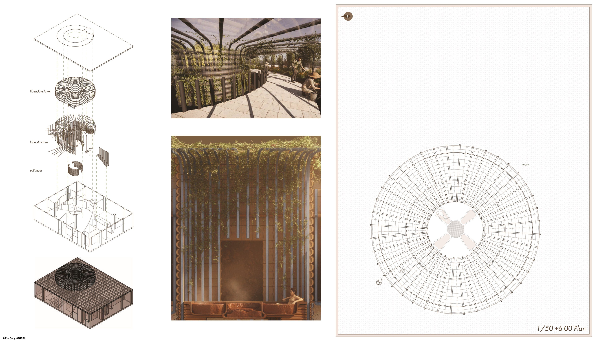
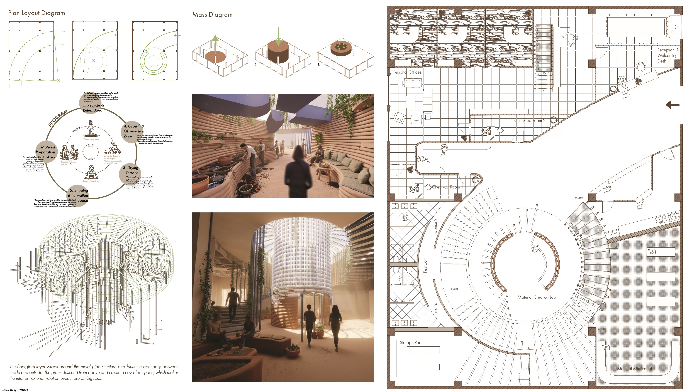
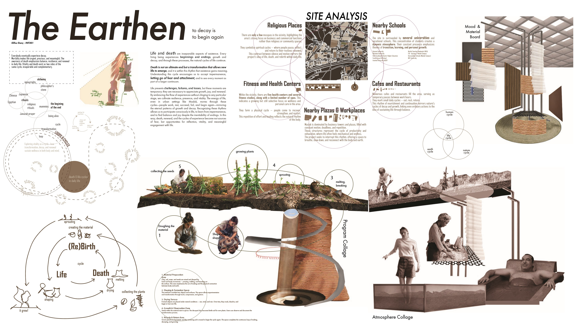

10 — THE EARTHEN
“to decay is to begin again — Is there death because there is life?”

Life and death are inseparable aspects of existence. Many living beings experience beginnings and endings, growth and decay, and through these processes, the natural cycles of the earth run.
Death is not an ultimate end, but a transformation that allows new life to emerge and dynamic interactions within nature to continue. Understanding this cycle encourages us to rethink experiences, letting go of fear and attachment, and to see every moment as part of a larger continuum.
Embracing Losses Rather Than Removing Them
Everyday pursuits open to decay, mortality, failure. The urgent concerns and meaningless flux awaken to life's auspicious balance. Not losses are removed in daily life; faults and death allow the solemn side of the commodity: respect and temperance.
We promote the fatigue, failures, and losses. By embracing the flow of experience cycles, bringing in each particular stage, one can achieve resilience, presence, and vitality. The energy of the seed captures this flexible, radiant heritage: from a cocoon providing nourishment, suspending, falling, and beginning again.
TACTILE RESISTANCE TO FAST-PACED URBAN FLUX
Situated at the intersection of religious sanctuaries, educational facilities, fitness centers, and bustling office plazas, The Earthen serves as an intentional sanctuary of slowness. In contemporary urban life, exhaustion, failure, and mortality are treated as dysfunctions to be hidden away behind commercial efficiency.
The Earthen constructs an active counter-space where visitors physically re-engage with soil, clay, and decomposition. By touching raw mud, kneading clay with their hands, and bathing in mineral-rich subterranean pools, visitors surrender the anxiety of permanence and reconnect with natural cyclical time.
MATERIAL MORTALITY AS AN ARCHITECTURAL INSTRUMENT
Rather than building static monuments that defy time, this architecture celebrates weathering, cracking, and erosion. Ceramic vessels shaped in the lower laboratories are placed on open sun terraces to crack, degrade, and reintegrate with organic soil.
At the uppermost terrace garden, decayed organic matter forms fertile substrate for living plants. Ripe seeds are collected and channeled back down into subterranean workshops through functional tube conduits, generating a perpetual closed loop where every ending triggers a new beginning.
HIZ ODAKLI KENTSEL AKIÅA KARÅI TOPRAKLA DOKUNSAL DÄ°RENÄ°Å
İbadethanelerin, okulların, spor merkezlerinin ve yoğun iş plazalarının kesişiminde konumlanan The Earthen, bilinçli bir yavaşlama ve yüzleşme tapınağı olarak kurgulanmıştır. Çağdaş kent yaşamında yorgunluk, kayıp ve fânilik, ticari verimliliğin ardına saklanması gereken kusurlar gibi algılanır.
The Earthen, ziyaretçilerin toprak, kil ve doğal çözünme süreçleriyle doğrudan bedensel temas kurduğu bir karşı-mekân önerir. Ham çamuru yoğurarak, zemin kattaki mineral çamur havuzlarında dinlenerek ve malzemenin tenlerinde kuruyup dökülmesine izin vererek kentliler, kalıcılık kaygısından sıyrılıp döngüsel zamana dahil olurlar.
BÄ°R MÄ°MARÄ° ENSTRÃœMAN OLARAK MADDENÄ°N FÂNÄ°LÄ°ÄÄ°
Zamana meydan okuyan donuk anıtlar inşa etmek yerine bu proje; aşınmayı, çatlamayı ve erozyonu mekânın kurucu unsurları haline getirir. Laboratuvarlarda şekillendirilen ham formlar güneş ve rüzgâr teraslarında hava şartlarına maruz bırakılır, solar ve zamanla toprağa karışır.
En üstteki çatı bahçesinde çözünen organik maddeler yeni filizler için verimli zemin oluşturur; olgunlaşan tohumlar toplanarak düşey boru kanalları üzerinden aşağıdaki üretim atölyelerine geri iletilir. Böylece her bitişin yeni bir doğumu beslediği kapalı devre bir metabolizma kurulur.
SEARCH & CRUSH
Extracting raw earth and dry clay minerals, crushing matter into fine powders ready for reconstitution.
SOAK & DOUGH
Water-based mixing in subterranean pools; bodily mud bathing, kneading with hands and feet.
SHAPE & FORM
Transforming pliable clay on potter wheels and radial workstations in the Material Creator Lab.
DRY & WEATHER
Exposing vessels to sunlight and wind; welcoming surface cracking, erosion, and material fragility.
DECAY & REGENERATE
Composting decayed matter on the +6.00m terrace garden; harvesting seeds to feed back into lower labs.
THE VERTICAL CYCLE OF MATTER
The sectional organization of the project is structured upon a vertical cycle of material transformation, progressing from wet to dry, from soft to solid, and from decay to growth:
- Lower Subterranean Level: Water-based immersion, soaking, and clay bathing allowing direct bodily engagement with liquid and semi-liquid mineral matter.
- Ground Level Labs: Matter becomes denser and more stable, enabling kneading, shaping, and forming on radial workstations.
- Upper Sun Terraces: Weathering and drying under natural air currents, permitting objects to cure, crack, and slowly transform.
- +6.00m Terrace Garden: Observation and cultivation where decomposed matter creates nutrient-rich soil for sprouting plants.
HYBRID METAL TUBES: STRUCTURE & CONDUIT
The curved metal tubes extend throughout the volume, dissolving the boundary between structural architecture and interior furniture:
- Structural Frame: Vertical radial ring providing seismic and gravity support for the central atrium and rooftop garden.
- Functional Furniture: Tubes bend to become seating, work tables, handrails, and spatial dividers.
- Biological Conduits: Internal hollow chambers act as vertical pipelines carrying harvested seeds, water, and clay slurry between levels, allowing the building itself to actively participate in the cycle of mixing and regeneration.
DIFFUSE TRANSLUCENT FIBERGLASS SKIN
Wrapped around the external perimeter of the tube framework, a curved fiberglass envelope modulates light and views:
- Filters direct urban sunlight into a warm, meditative amber glow.
- Blurs the visual threshold between the contemplative interior sanctuary and the urban context.
- Allows natural ventilation and thermal stack effect to ventilate drying zones while preserving humidity in bathing chambers.


The space offers a sequence of gentle physical activities that connect the human body with soil, clay, and planetary cycles. Visitors move through tactile encounters of kneading, grounding, and resting:





Layers from Sky to Earth: Roof garden slab with circular skylight aperture • Translucent fiberglass skin • Structural tube ring • Rammed earth walls and furniture • Subterranean mud base.

Programmatic Organization: Central circular ramp encircling the Material Creator Core • Kneading tables • Treatment & relaxation suites • Lockers & mineral baths • Material mixing trays.
Browse all 5 full-scale presentation sheets containing comprehensive site analysis, cyclical diagrams, 1/50 plans, building sections, 1/20 partial sections, 1/5 joinery details, and spatial renders:
